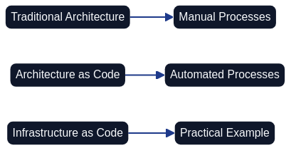
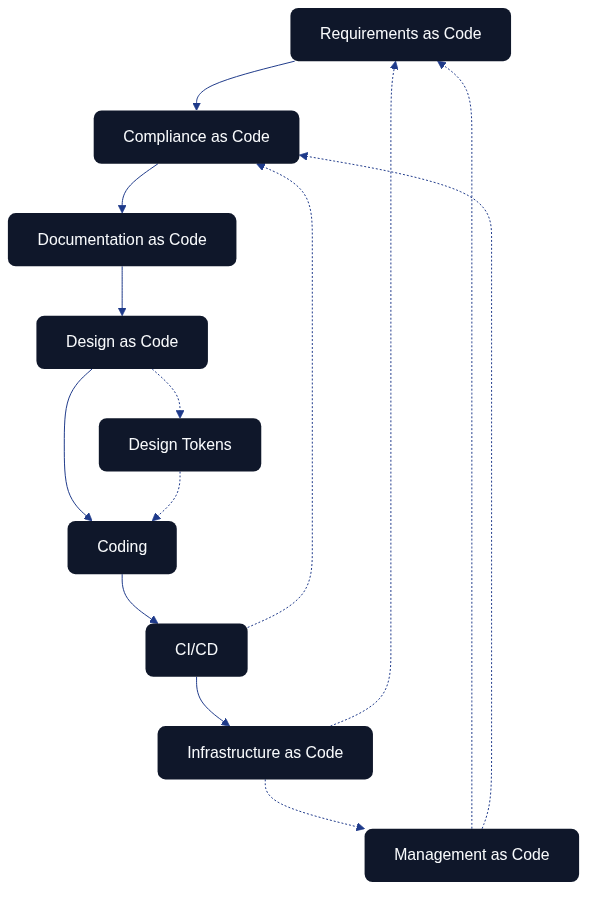

Introduction to Architecture as Code
Architecture as Code represents a paradigm shift in system development where the entire system architecture is defined, version-controlled, and managed through code. This approach enables organisations to apply the same methodologies as traditional software development across their whole technical landscape.

The diagram illustrates the evolution from manual processes to the comprehensive vision of Architecture as Code, where every aspect of the system architecture is codified.
Evolution towards Architecture as Code
Traditional methods for system architecture have often been manual and document-based. Architecture as Code builds on established principles from software development and applies them to the complete system landscape.
This includes not only infrastructure components, but also application architecture, data flows, security policies, compliance rules, and organisational structures – all expressed as code.
Microservice complexity as the primary driver
The tipping point for most organisations adopting Architecture as Code is the complexity created by large-scale microservice estates. The Cloud Native Computing Foundation's State of Cloud Native Development 2024 report notes that two thirds of modern organisations already run microservices in production while simultaneously coordinating event-driven workloads. Each additional service introduces new APIs, contracts, and deployment topologies that quickly outpace what static diagrams or isolated configuration repositories can keep synchronised.
Architecture as Code counters that systemic complexity by capturing service boundaries, operational dependencies, security policies, and resilience patterns as executable artefacts. When those definitions travel through the same pipelines as application code, teams can guarantee that mesh rules, policy guardrails, and interoperability tests evolve in lockstep with every service. In practice this makes Architecture as Code the governing layer that keeps sprawling microservice portfolios coherent, observable, and compliant.
Definition and Scope
Architecture as Code is the practice of describing, version-controlling, and automating the entire system architecture through machine-readable code. ThoughtWorks (2024) characterises this discipline as producing live, executable specifications that stay synchronised with the running estate rather than lingering as aspirational design artefacts. This encompasses application components, integration patterns, data architecture, infrastructure, and organisational processes.
This holistic approach enables end-to-end automation, where changes in requirements automatically propagate throughout the architecture – from application logic to deployment and monitoring. Because the specifications remain executable, governance controls, quality gates, and audit evidence can be embedded directly into the same pipelines that deliver software, keeping architecture intent verifiable at the pace that continuous delivery demands.
Critique of Traditional Architecture
Traditional architecture practices have struggled with "slideware syndrome"—expansive decks, static diagrams, and committee reviews that rapidly drift away from operational reality. As environments evolve, these unchecked artefacts accumulate architectural entropy: the gradual loss of coherence between documented intent and implemented systems. ThoughtWorks (2024) warns that this entropy erodes trust, leaving teams to improvise workarounds that bypass architectural guardrails altogether.
DevOps-driven change velocity amplifies these failure modes. Release pipelines ship features and infrastructure updates in hours rather than quarters, and manual governance checkpoints become bottlenecks that teams either circumvent or replicate inconsistently. Architecture as Code responds by embedding governance policies, compliance checks, and architectural decision records inside the same automated workflows, ensuring that fast-moving delivery remains accountable to shared standards without reverting to bureaucratic overhead.
Adoptability
Red Hat (2023) stresses that Architecture as Code succeeds only when teams can adopt it without wholesale tooling upheaval. Expressing architectural intent as YAML, JSON, or domain-specific languages keeps specifications approachable so enterprise architects, platform engineers, and governance specialists can all work in the same repository from day one. Lightweight guardrails, documented contribution paths, and iterative enablement make the practice consumable for organisations that are still shifting away from slideware-heavy governance.
Extensibility
The same guidance highlights extensibility as the safeguard against future bottlenecks. Modular model definitions, reusable policy templates, and integration points for build, security, and observability tooling allow an Architecture as Code platform to evolve alongside the wider landscape. Extensible artefacts give teams freedom to plug in new delivery pipelines, compliance checks, or visualisation tools without rewriting the architectural source of truth.
Productivity
Red Hat also frames productivity as a direct outcome of codifying architecture. Once architectural definitions, policies, and documentation live in version control, automation can validate changes, orchestrate reviews, and publish documentation without manual intervention. The result is faster feedback for architects and delivery teams, fewer approval bottlenecks, and a measurable uplift in how quickly organisations can make safe architectural decisions.
The Interconnected Flow of Architecture as Code

Architecture as Code is not a linear process but an interconnected ecosystem where different aspects reinforce and validate each other. The diagram illustrates how various “as Code” practices form a cohesive development cycle:
Requirements as Code forms the foundation, with business and functional requirements codified in machine-readable formats. These requirements feed into Compliance as Code, ensuring that regulatory and security policies are automatically validated throughout the development process.
Documentation as Code maintains living documentation that evolves with the codebase, while Design as Code (including design tokens for consistent styling and branding) defines the visual and structural patterns. This flows naturally into the Coding phase, followed by CI/CD pipelines that automate testing, validation, and deployment.
Finally, Infrastructure as Code provisions and manages the runtime environment. Management as Code integrates leadership practices, governance routines, and strategic decision-making into the same version-controlled ecosystem, ensuring that organisational policies and management intent are codified alongside technical implementations. The feedback loops show how infrastructure changes can trigger compliance checks, how management policies inform requirements and compliance, and how CI/CD results inform requirements validation, creating a continuous improvement cycle that spans both technical and organisational domains.
Purpose and Target Audience of the Book
This book is aimed at system architects, developers, project managers, and IT decision-makers who want to understand and implement Architecture as Code within their organisations.
Readers will gain comprehensive knowledge of how the entire system architecture can be codified, from foundational principles to advanced architectural patterns that encompass an organisation’s entire digital ecosystem.
Sources: - ThoughtWorks. "Architecture as Code: The Next Evolution." Technology Radar, 2024. - Martin, R. "Clean Architecture: A Craftsman's Guide to Software Structure." Prentice Hall, 2017. - Red Hat. "Architecture as Code Principles and Best Practices." Red Hat Developer, 2023. - Cloud Native Computing Foundation. "State of Cloud Native Development 2024." CNCF, 2024.
How This Book Is Organised
This book follows a deliberate progression that mirrors the typical Architecture as Code transformation journey:
Part A: Foundations establishes the conceptual groundwork, covering core principles, version control practices, and Architecture Decision Records that form the bedrock of successful implementation.
Part B: Architecture Platform explores the technical building blocks—automation, DevOps, CI/CD pipelines, and containerisation—that transform architectural intent into operational reality.
Part C: Security and Governance addresses the critical controls and compliance frameworks that ensure Architecture as Code practices align with regulatory requirements and organisational policies.
Part D: Delivery and Operations bridges technical capabilities with business outcomes through testing strategies, practical implementation patterns, cost optimisation, and migration approaches.
Part E: Organisation and Leadership examines the organisational transformation, team structures, cultural shifts, and leadership practices that enable sustainable Architecture as Code adoption.
Part F: Experience and Best Practices synthesises lessons learned from real-world implementations, exploring how different "as Code" disciplines work together and distilling proven patterns across diverse contexts.
Part G: Future and Wrap-up looks ahead to emerging trends whilst providing a comprehensive conclusion that ties together all elements of the Architecture as Code journey.
Each part builds upon previous foundations whilst setting the stage for what follows, creating a cohesive narrative that guides readers from first principles through to advanced practice.
Companion workbook and course alignment
The Architecture as Code course workbook, exercise guide, and facilitator materials in course/ extend this book into a practised learning journey. Each module maps directly to the chapters referenced throughout this introduction, ensuring that participants reinforce the concepts, controls, and cultural shifts described in the text. Workbook templates prompt teams to cite the relevant chapters, appendices, and evidence patterns so that classroom outputs remain consistent with the canonical guidance presented here. Facilitators should encourage learners to keep the workbook and this book side by side: every experiment, radar update, and artefact submission ought to reference the sections that informed the work, maintaining a verifiable audit trail between theory and practice.